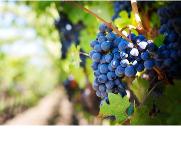
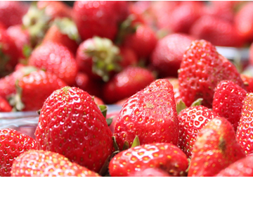
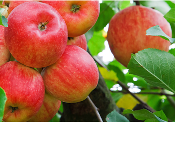
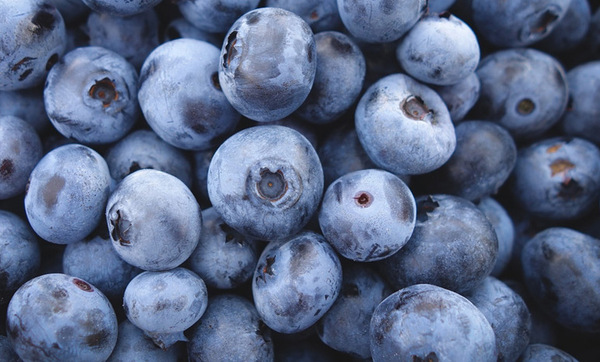
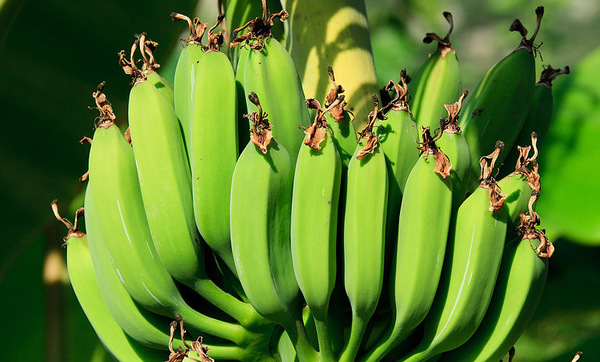
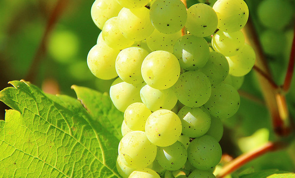
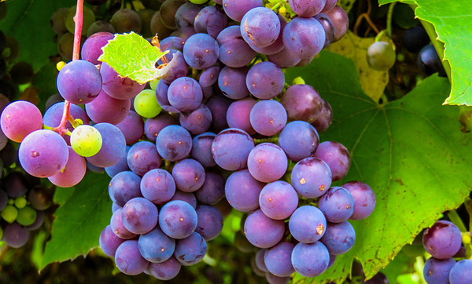
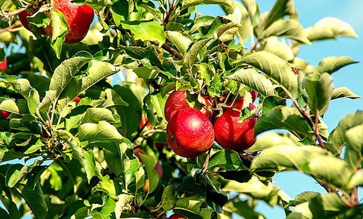

施有机肥，自然成熟，无农残
从果园到门店，全面鲜度管理，全球最多种植基地、确保每一个水果新鲜。
FROM THE ORCHARD TO THE STORE, FULL FRESHNESS MANAGEMENT, THE WORLD'S LARGEST PLANTING BASE, TO ENSURE THAT EVERY FRESH FRUIT.
-

葡萄
增强免疫抗衰老
每天吃少量的苹果就能预防多种疾病，还让人有饱腹感，不愧是最务实的水果。美国癌症研究中心特别建议，人们常吃苹果来预防癌症，因为其中含量丰富的天然抗氧化剂能够有效消除自由基，降低癌症发生率。
-

草莓
维护血管健康
草莓营养丰富，含有果糖、蔗糖、柠檬酸、苹果酸、水杨酸、氨基酸以及钙、磷、铁等矿物质。此外，它还含有多种维生素，尤其是维生素C含量非常丰富，每100克草莓中就含有维生素C60毫克。草莓中所含的胡萝卜素是合成维生素A的重要物质，具有明目养肝作用。
-

苹果
保持快乐心情
子。葡萄皮和葡萄子比葡萄肉更有营养。红葡萄酒之所以比白葡萄酒拥有更好的保健功效，就是因为它连皮一起酿造。而法国波尔多大学的专研人员也发现，葡萄子中含量丰富的增强免疫、延缓衰老物质，进入人体后有85%被吸收利用。
     -
-